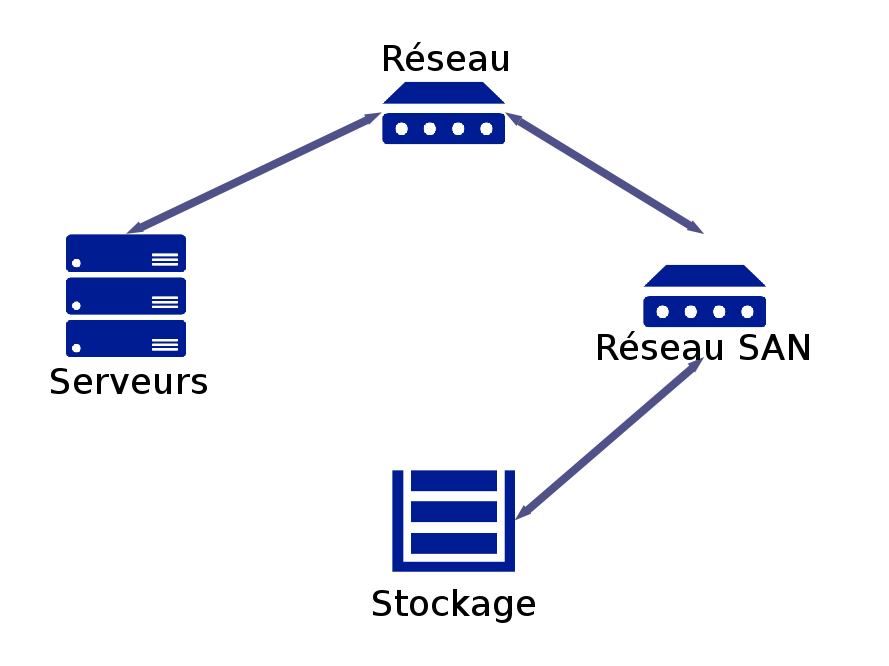

Technologies de Cloud Computing
M-TSI
Cédric Esnault
18/10/2022 - IGN/ENSG
Définitions
Cloud
Le terme Cloud est devenu très englobant. Aujourd’hui il regroupe la fourniture d’un service, son mode d’accès et son infrastructure. Plusieurs organismes ont essayé de normaliser la définition du Cloud computing
Définition du NIST
National Institute of Standards and Technology
Cloud computing is a model for enabling ubiquitous, convenient, on-demand network access to a shared pool of configurable computing resources (e.g., networks, servers, storage, applications, and services) that can be rapidly provisioned and released with minimal management effort or service provider interaction. This cloud model is composed of five essential characteristics, three service models, and four deployment models.
Caractéristiques
- Libre-service et à la demande (paiement à l’usage)
- Accessible sur l’ensemble d’un réseau
- Mutualisation des ressources (Multi tenant)
- S’adapter rapidement à une variation du besoin (scalabilité)
- Mesurable (statistiques d’usage, ressources …)
Modèles de service
- Saas : SoftWare As A Service
- Paas : Platform As A Service
- Iaas : Infrastruture As A Service
Modèles de service

Modèles de déploiement
- Cloud Public Une organisation vend des services accessibles à tous
- Cloud Communautaire L’infrastructure est partagé par plusieurs organismes, elle peut être géré par les organismes ou par une tierce partie
- Cloud Privé L’infrastructure est accessible à une seule organisation. Elle peut cependant être gérée et hébergée par une tierce partie
- Cloud Hybride C’est une composition d’un Cloud privé et d’un Cloud public ou communautaire pour absorber les pics de charge (Cloud Bursting)
Modèles de déploiement

SaaS
Software As A Service
C’est une application identifié, fournie à la demande pour un utilisateur, l’application et les données sont hébergées dans les Datacenters du fournisseur. En général elle est hautement configurable.
- Wordpress.com
- Solutions de paiement en ligne
- Messagerie/Bureautique (office 365)
On peut intégrer les offres de sauvegarde en ligne dans cette catégorie (icloud / dropbox ...).
Software As A Service

Usages
- Avantages
- indépendant de la technologies sous-jacente = portable
- (pratiquement) plus de gestion de la sécurité
- réactivité
- Inconvénients
- limité au service proposé, pas d’adaptation possible
- risques liés au multi tenant si mauvaise isolation
Iaas
Infrastructure As A Service
C’est la base du Cloud Computing, ici le fournisseur offre du CPU, de la RAM, du stockage, du réseau et éventuellement d’autres services d’infrastructures (FireWall, DNS, VPN …). Le client construit son architecture, ajoute des réseaux, des machines virtuelles, des volumes de stockages persistant… Il installe ensuite les systèmes d’exploitations qu’il désire, les applications qu’il souhaite et propose (ou non) ces services sur le réseau (internet ou autre). Le tout est facturé à la consommation.
Infrastructure As A Service

Usages
- Avantages
- contrôle de l’architecture jusqu’à l’OS, nécessaire pour une gestion accru de la sécurité. Seule la partie matérielle, ainsi que la gestion des hyperviseurs et des services proposés est déléguée au fournisseur.
- Inconvénients
- environnement multi-tenant pouvant poser des problèmes de confidentialités si la sécurité n’est pas gérée correctement.
- visibilité limité sur la politique de sécurité du fournisseur au niveau des hyperviseurs.
- dépendant de la réactivité du fournisseur en cas d’incident matériel
Convergence
Architecture non convergée

Architecture non convergée
- Architecture traditionnelle
- Les composants sont spécialisés avec
- Des commutateurs Ethernet
- Des serveurs
- Un réseau SAN (FC/iscsi) pour le stockage
Architecture convergée

Architecture convergé
- Infrastructure avec un réseau unifiée
… et hyperconvergée
… et hyperconvergée
- Architecture unifiée
- Un composant concentre les fonctions d’infrastructure
- Évolutive (scale out)
- Automatisée via une solution de pilotage logicielle (Software defined)
Usages de la virtualisation
Virtualisation du système
Plusieurs niveaux
- Isolation applicative (Conteneur)
- Para-virtualisation (hyperviseur type1)
- Virtualisation complète (hyperviseur type1)
- Virtualisation complète (hyperviseur type2)
- Émulation (cpu différent)
Isolation applicative
- Initialement spécifique au monde Unix
- Isolation de l’espace utilisateur
- « Partage » du noyau
- EX IGN : DockerForge
Isolation applicative

Hyperviseur de type 1
- Noyau léger
- Exploitation matériel (Intel VT / AMD-V)
- Para-virtualisation possible : les OS invités intègrent des mécanismes permettant d’exécuter des instructions directement sur le processeur.
- Matériel émulé ET/OU partagé
- Ex : VMware vSphère (IGN) / XenServer (ENSG) / KVM (Oshimae)
Hyperviseur de type 1

Hyperviseur de type 1
- Avantages
- Rapidité (peu de perte)
- bonne isolation
- live migration
- changement des caractéristiques de la VM (éventuellement à la volée)
- Inconvénients
- complexité de mise en œuvre
- OS VM adapté
Hyperviseur de type 2
- Avantages
- Simplicité de mise en œuvre
- OS variés
- Inconvénients
- Lenteur
- Ressource limité à celle de l’hôte
- Grosses images systèmes (export…)
Émulateur
- changement de plateforme (ARM sur X86)
- Tout est émulé
- => très lent
- Ex : Android Virtual device …
Virtualisation du réseau
- Network Virtualization
- Création de tunnels GRE / VxLAN
- OpenVswitch
Virtualisation du réseau
Virtualisation du réseau
- Software Defined Network (SDN)
- Séparation du contrôle et des données
- openflow
- Pilotage des switchs
Virtualisation du réseau
- SDWAN
- Virtualisation des réseaux WAN (MPLS…)
- Remplacement par une multitude de réseaux internet
- Orchestration Logicielle
- Efficace et nettement moins cher!
Virtualisation du stockage
- Software Defined Storage (SDS)
- Stockage Virtuel
- Une couche contrôle (Gestion, allocation des ressources, Qos, sécurité)
- Une couche stockage (Parité, thin provisioning, compression …)
- Services : Stockage objet, Bloc, fichier, HDFS
- Logiciel
- Une solution centralisé de gestion du réseau, Qos, Sécurité , ressources, autorisations, quotas…
- EX: VmWare VirtualSAN / CEPH / S3
Software Defined Datacenter
- (SDDC)
- Virtualisation complète de l’infrastructure
- Serveurs virtuel
- Réseau virtuel
- Stockage virtuel
- Un système d’orchestration centralisé
- Ex: Openstack, Vcloud
Virtualisation et sécurité
- Risques Additionnels
- Concentration des ressources (stockage, réseau, système), des outils et des rôles.
- Des composants additionnels à maîtriser et à surveiller
- Vigilance
- La couche d’abstraction est un système à part entière, à mettre à jour et sécuriser
- Les habilitations d’accès aux couches d’abstractions doivent êtres ajustées avec soins.
- Les systèmes critiques doivent être protégés (cloisonnement par ressources dédiés ou réservations de ressources, Qos…)
Virtualisation et sécurité
- Apports
- Une disponibilité plus élevée
- Des déploiements (potentiellement) automatisés
- Des ressources plus faciles à reconstruire (Sauvegarde, PRA…)
Ressources Physiques
Datacenters
Tiers

Serveurs

Réseau

Stockage

Climatisation

Électricité
- L’énergie représente ~40% du coût d’exploitation
- le refroidissement 40% à 50%
- Datacenter moderne et optimisé = 1.5 à 3KW/m2
Exemple de l’envolée du Bitcoin : si la flambée du bitcoin démarrée en 2017 avait continuée , en 2020 le calcul de la blockchain aurait consommé toute l’énergie de la planète. Cette consomation s’est stabilisée et équivaut aujourd’hui à peu près à la consomation de la suisse.
GREEN IT
Exemple d’infrastructure Cloud
- Cas pratique : Constitution d’un cloud Openstack
- 10 serveurs
- reliés sur au moins 3 réseaux différents
- Admin
- Stockage
- Traffic réseau
- Répartitions des rôles sur les différents serveurs pour limiter les SPOFs
- 3 Contrôleurs (NOVA/HORIZON)
- 3 Computes (NOVA/NEUTRON)
- 1 Networks (NEUTRON)
- 3 Stockages (CINDER/SWIFT/CEPH)
- Accès et exploitation via API / Dashboard
Mots clés
Abstraction (api)
Une API (Application Programming Interface) Permet de faire abstraction de l’élément sur lequel elle se pose. Elle décrit comment le consommateur peut utiliser les fonctions du fournisseur. Dans le Cloud il est primordial que le maximum d’échanges se fassent au travers d’API pour garantir l’interopérabilité.
Interopérabilité
C’est la faculté qu’un système a de s’interfacer avec un autre sans le connaître. Interopérabilité est primordiale dans un environnement hétérogène. Ceci est notamment faisable grâce à la description complète des interfaces de ce système et à l’utilisation de format d’échanges normés ou standardisés.
Multi-tenant
Un SI multi-tenant désigne une infrastructure qui partage ses ressources entre plusieurs clients. Chaque client ne doit pas avoir conscience que les autres existent.
InfraAsCode
l’Infrastructure As Code désigne les technique permettant de définir une infrastructure par du code informatique (script, conf…). La mise en place de cette infrastructure est alors totalement automatisable et ré-instanciable à la demande. Ceci est possible lorsque tous les éléments de l’infrastructure ont été virtualisés.
- On entend souvent aussi parler de gitOps
WebServices
Les Service Web désigne plusieurs chose mais principalement un concept d’API exposé sur le WEB utilisant une technologie d’échange, le plus souvent en mode SOA (Architecture orienté service) où des fonctions sont exécutées à distance.
Les API RESTful sont grandement utilisé dans le monde des Webservices. (HTTP + CRUD)
Object Storage
Le stockage Objet permet une abstraction du stockage physique, les informations sont stockée sous forme d’Objet pouvant contenir n’importe quelle donnée, des métadonnées et accessible sans index (c’est un algorithme qui calcul à quel endroit se situe la donnée dans le cluster) via une API (S3 d’AWS par exemple). Le cluster est composé d’éléments simples, peu coûteux, facilement extensible, avec une gestion logicielle.
NOSQL
NoSQL regroupe un ensemble de type de SGBD, souvent adapté à des gros volumes ou a des traitements rapide, et par nature facilement scalable et résilient.
ex : MongoDB, Redis, Cassandra
MessageQueue
Les architectures Cloud utilisent beaucoup la programmation par évènement et donc des agents de message (Message Broker) pour orchestrer ces messages, c’est le rôle d’une Message Queue
Ex: ActiveMQ, RabbitMQ, Kafka
ServerLess
ServerLess désigne les services proposé en mode Cloud qui ne comprennent pas la livraison d’une machine pour réaliser l’opération, l’appel au service génère une mise à disposition de ressource en fonction de la charge nécessaire à l’exécution de la demande et la libère instantanément.
StateLess
Se dit d’une application ou d’un service qui ne conserve pas en interne d’état d’une connexion d’un client entre 2 appels au service. Cela permet de faire traiter la demande par des machines différentes à chaque requête. C’est une des notions primordiale du développement d’application Cloud-Ready
autonomic computing
L’autonomic Computing désigne la capacité de ces systèmes de pouvoir se réparer eux même. Ils intègrent de la surveillance et de la détection d’anomalie.
12 factors
12 Factors désigne les règles pour concevoir des application Cloud Natives. Cas application ainsi développée s’intègrerons parfaitement dasn les univers Cloud en profitant u maximum des avantages de ce tupe d’hébergement.
Systèmes repartis
Un système réparti est un SI dans lequel l’information et l’exécution est distribuée sur un ensemble de nœuds constituant un Cluster. Cet ensemble peut être hétérogène et doit être scalable.
- ex: seti@home
- ex: cluster kubernetes
High Availability
la HA désigne la capacité d’un système à survivre à la perte d’un élément de son infrastructure. Ceci en permettant l’utilisation d’une autre ressource de façon transparente pour l’utilisateur. On élimine ainsi les SPOF (Single Point Of Failure). Un Load-balancer permet la HA des services Web par exemple.
PRA/PCA
- PRA : Plan de reprise d’activité. Désigne le fait qu’il existe une solution pour reprendre l’activité d’un SI après un temps prévu (le plus court possible)
- PCA : Plan de continuité d’activité. Une solution existe pour continuer l’activité d’un service en cas de perte d’un élément constituant ce service (peut être un Datacenter tout entier, il faut donc alors basculer sur un autre Datacenter de façon transparente pour l’utilisateur).
CDN
Content Delivery Network désigne un réseau synchronisé de serveurs permettant la diffusion de données au plus près de l’utilisateur (géographiquement parlant) afin de limiter l’effet de latence. Le CDN permet aussi de fournir un système de cache très efficace et proche de l’utilisateur.
Devops
Devops désigne un courant de pensée informatique visant à éliminer le conflit entre les Développeurs qui souhaitent faire évoluer un SI et les Opérationnels qui souhaitent avoir un SI le plus Stable possible.
Il est née de l’utilisation de bout en bout des méthodes Agiles
Devops

Devops
Devops est très à la mode, c’est une méthodologie très adaptée aux startups, l’évolution des outils mis à disposition permet de faire des pipeline de bout en bout sans connaissance de la complexité sous-jacente.
Mais on commence à voir les travers:
- complexité : CloudArchitect
- risques en sécurité : DevSecOps
- Augmentation des coûts cachés : FinOps